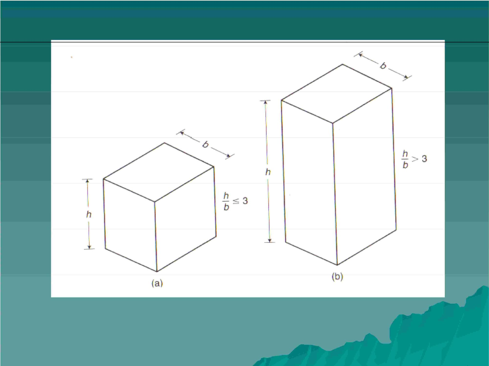

Textos de Referencia del Módulo 2
Para calcular las solicitaciones internas ($M_u, V_u, P_u$) en cualquier modelo estructural, primero es indispensable conocer el peso propio y la rigidez ($E_c I_g$) de cada elemento. Las ecuaciones de predimensionamiento de este módulo están respaldadas en:
Cap. B.2 a B.4 (Cargas muertas y vivas), Cap. C.8.13 (Viguetas y losas nervadas), Cap. C.9.5 (Control de deflexiones), Cap. C.10 / C.21 (Vigas y columnas sísmicas) y Cap. C.15 / C.11.11 (Zapatas).
Diseño de Estructuras de Concreto (12.ª ed., McGraw-Hill). Control de deflexiones en vigas y losas en una y dos direcciones, dimensionamiento de columnas y zapatas.
Estructuras de Concreto I (7.ª ed., Universidad Nacional de Colombia). Predimensionamiento de vigas, viguetas, losas aligeradas, áreas aferentes y cimentaciones superficiales.
Hormigón Reforzado (Parte I y II) (Universidad EAFIT). Metodología práctica de predimensionamiento sísmico de vigas, columnas y zapatas aisladas.
1. Predimensionamiento de Vigas
Altura Mínima ($h_{\min}$) de Vigas por Control de Deflexiones
En las vigas de concreto reforzado, el peralte o altura total ($h$) está gobernado primordialmente por el Estado Límite de Servicio de Deflexiones. Como el momento de inercia bruto de una sección rectangular crece con el cubo de su altura ($I_g = \frac{1}{12} b_w h^3$), una viga con altura insuficiente sufre deflexiones instantáneas y diferidas (por flujo plástico y retracción) que aplastan y fisuran diagonalmente a $45^\circ$ los muros divisorios de mampostería apoyados o ligados a ella.


| Criterio Normativo según Particiones Soportadas | Simplemente apoyadas | Con un extremo continuo | Ambos extremos continuos | En voladizo |
|---|---|---|---|---|
| Caso A — Tabla C.9.5(a): Vigas que NO soporten ni estén ligadas a particiones u otros elementos susceptibles de dañarse por deflexiones grandes | $\dfrac{l}{16}$ | $\dfrac{l}{18.5}$ | $\dfrac{l}{21}$ | $\dfrac{l}{8}$ |
| Caso B — Tabla CR.9.5 (Comentario): Vigas que SÍ soporten o estén ligadas a muros divisorios y particiones frágiles susceptibles de dañarse (sin cálculo de deflexiones) | $\mathbf{\dfrac{l}{11}}$ | $\mathbf{\dfrac{l}{12}}$ | $\mathbf{\dfrac{l}{14}}$ | $\mathbf{\dfrac{l}{5}}$ |
- Relación práctica ancho-altura: Una vez definida la altura $h$ (redondeada hacia arriba en múltiplos de $50\text{ mm}$ o $5\text{ cm}$), el ancho del alma $b_w$ de una viga descolgada se predimensiona en el rango: $$b_w \approx (0.50\text{ a }0.70)\, h$$
- Uniformidad de altura en ejes con luces variables: Cuando una viga continua tiene tramos de diferente longitud (ej. vanos interiores de $7.00\text{ m}$ y voladizo de $1.50\text{ m}$), se adopta para todo el eje la mayor altura requerida ($h_{\max}$) entre todos sus tramos, garantizando continuidad de las barras longitudinales en los nudos y facilidad de encofrado.
- Compatibilidad viga-losa: La altura de toda viga principal o secundaria debe ser al menos igual al espesor total del entrepiso ($h_{\text{viga}} \ge h_t$).
2. Predimensionamiento de Viguetas (Nervios) y Riostras
Peralte ($h_t$), Ancho ($b_w$), Separación ($S$) y Riostras de Repartición en Viguetas
En los entrepisos aligerados, las viguetas o nervios son los elementos encargados de salvar la luz menor ($l_{\text{corta}}$) del panel y entregar sus reacciones a las vigas principales. Para que el sistema pueda diseñarse como losa nervada (aprovechando el incremento del $10\%$ en la resistencia al cortante del concreto, $1.1\,V_c$, sin necesidad de estribos cerrados densos en cada nervio), las viguetas deben cumplir simultáneamente las alturas mínimas de control de deflexiones y las restricciones dimensionales del Capítulo C.8.13.


• Si la luz de la vigueta cumple $l_{\text{vigueta}} \le \min(10\, h_t,\; 4.00\text{ m})$, NO se requiere riostra intermedia ($0\text{ riostras}$).
• Si $l_{\text{vigueta}} > \min(10\, h_t,\; 4.00\text{ m})$, es obligatorio colocar riostras transversales que dividan el tramo en sub-tramos de longitud $\le \min(10\, h_t,\; 4.00\text{ m})$, armadas como mínimo con una barra $\text{No. }4$ ($\phi\,1/2''$) continua en la parte superior e inferior.
3. Predimensionamiento de Losas (Loseta Superior, Losas Macizas y Escaleras)
Criterio de Direccionalidad ($\beta$), Loseta Superior ($t$), Losas Macizas y Escaleras
Para predimensionar cualquier placa o losa de entrepiso, el primer paso es establecer si trabaja en una dirección ($\beta = l_{\text{larga}} / l_{\text{corta}} > 2.0$, donde más del $94.1\%$ de la carga viaja por la luz corta) o en dos direcciones ($\beta \le 2.0$ apoyada en sus cuatro bordes), y a continuación aplicar el criterio de espesor mínimo correspondiente a su tipología.
4. Predimensionamiento de Columnas
Bajada de Cargas por Áreas Aferentes y Sección Bruta Requerida ($A_{g,\text{req}}$)
Un miembro vertical se clasifica como columna cuando su altura libre $h_{\text{libre}}$ excede tres veces su menor dimensión lateral ($h_{\text{libre}} / b > 3$) y su carga axial mayorada cumple $P_u > 0.10\, f'_c A_g$. Su predimensionamiento se realiza trazando el área aferente ($A_{\text{af}}$) tributaria a cada apoyo, acumulando la carga última $w_u = 1.2\,D + 1.6\,L$ de los $N$ pisos soportados y despejando el área bruta $A_g = b \times h$ de la ecuación de resistencia axial última afectada por un factor de amplificación sísmica ($\alpha_{\text{sismo}}$).
- Peso específico del concreto reforzado: $\gamma_c = 24.0\text{ kN/m}^3$ ($2.40\text{ tonf/m}^3$).
- Acabados de piso y mortero de nivelación: $1.50\text{ a }2.00\text{ kN/m}^2$.
- Muros divisorios y particiones de mampostería: $1.50\text{ a }3.00\text{ kN/m}^2$.
- Cielo raso e instalaciones: $0.30\text{ a }0.50\text{ kN/m}^2$.
- Carga Viva ($L$) según uso: Residencial/Vivienda $= 1.80\text{ kN/m}^2$; Escaleras y balcones residenciales $= 3.00\text{ kN/m}^2$; Oficinas y aulas $= 2.00\text{ kN/m}^2$; Corredores públicos $= 5.00\text{ kN/m}^2$.

3 y fuerzas axiales" style="max-height: 250px; object-fit: contain;" />• Columna Interior: $\left(\frac{L_{x1}+L_{x2}}{2}\right)\left(\frac{L_{y1}+L_{y2}}{2}\right)$
• Columna Medianera (Borde): $\left(\frac{L_{x1}+L_{x2}}{2}\right)\left(\frac{L_{y1}}{2}\right)$
• Columna Esquinera: $\left(\frac{L_{x1}}{2}\right)\left(\frac{L_{y1}}{2}\right)$
• Columna Interior: $\alpha_{\text{sismo}} \approx 1.20\text{ – }1.25$
• Columna de Borde: $\alpha_{\text{sismo}} \approx 1.30\text{ – }1.35$
• Columna Esquinera: $\alpha_{\text{sismo}} \approx 1.45\text{ – }1.50$
| Grado de Disipación | Dimensión Menor Mínima ($b_{\min}$) | Área Bruta Mínima ($A_{g,\min}$) | Relación de Lados y Observaciones Especiales |
|---|---|---|---|
| DMI (Capacidad Mínima) | Definida por resistencia y recubrimiento (usualmente $\ge 200\text{ mm}$) | $\ge 40\,000\text{ mm}^2$ ($400\text{ cm}^2$) | Cuantía longitudinal $0.01 \le \rho_g \le 0.04$ (`C.10.9.1`). |
| DMO (Capacidad Moderada) | $\mathbf{b_{\min} \ge 250\text{ mm}}$ ($25\text{ cm}$) | $\mathbf{\ge 62\,500\text{ mm}^2}$ ($\mathbf{625\text{ cm}^2}$) | Se permite una dimensión mínima de $200\text{ mm}$ en secciones en T, C o I pero manteniendo área $\ge 62\,500\text{ mm}^2$ (`C.21.3.5.1`). |
| DES (Capacidad Especial) | $\mathbf{b_{\min} \ge 300\text{ mm}}$ ($30\text{ cm}$) | $\mathbf{\ge 90\,000\text{ mm}^2}$ ($\mathbf{900\text{ cm}^2}$) | Relación entre dimensión menor y dimensión perpendicular $\mathbf{b / h \ge 0.40}$ (`C.21.6.1.2`). En secciones en T, C o I se permite $250\text{ mm}$ manteniendo $A_g \ge 90\,000\text{ mm}^2$. |
5. Predimensionamiento de Zapatas
Dimensionamiento en Planta ($B \times L$) por Servicio y Espesor ($h_z$) por Punzonamiento y Cortante
El predimensionamiento de una zapata aislada consta de dos etapas gobernadas por filosofías distintas: primero, el área de contacto en planta ($A_{\text{zap}} = B \times L$) se determina con las cargas de servicio sin mayorar ($P_s = D + L$) para no superar la capacidad portante admisible del suelo ($q_{\text{adm}}$); segundo, el espesor o altura total ($h_z = d + r$) se determina con las cargas mayoradas últimas ($P_u = 1.2\,D + 1.6\,L$) de manera que el concreto por sí solo resista el cortante bidireccional (punzonamiento) y el cortante unidireccional sin requerir estribos.
- Altura efectiva mínima (`NSR-10 C.15.7`): La altura efectiva $d$ por encima del refuerzo inferior no puede ser menor de $\mathbf{150\text{ mm}}$ ($15\text{ cm}$) para zapatas apoyadas sobre el suelo, ni menor de $\mathbf{300\text{ mm}}$ ($30\text{ cm}$) para cabezales apoyados sobre pilotes.
- Recubrimiento mínimo contra el suelo (`NSR-10 C.7.7.1(a)`): Para concreto colocado directamente contra el suelo y en contacto permanente con él, el recubrimiento libre mínimo del acero es de $\mathbf{75\text{ mm}}$ ($7.5\text{ cm}$). Sumando el diámetro de las barras de la parrilla ($\approx 15\text{ mm}$), el espesor total mínimo absoluto de una zapata es: $$h_z = d + 90\text{ mm} \ge 150 + 90 = 240\text{ mm} \implies \mathbf{h_{z,\min} \ge 250\text{ mm}\;(25\text{ cm})}$$
- Criterio de zapata rígida sin estribos: Como no es constructivamente práctico colocar estribos en zapatas, el peralte efectivo $d$ se predimensiona para que el concreto resista el $100\%$ del cortante bidireccional ($\phi V_{c2} \ge V_{u2}$) y unidireccional ($\phi V_{c1} \ge V_{u1}$) con $\phi = 0.75$.
6. Laboratorio Interactivo de Predimensionamiento
Predimensionamiento y Diagnóstico Específico por Numeral (C.9.5 y C.8.13.2 / C.8.13.3 / C.8.13.3.1 / C.8.13.6)
Áreas Aferentes, Bajada de Cargas, Predimensionamiento de Columna y Zapata Aislada ($B \times B \times h_z$)
7. Ejemplos Numéricos Reales de Predimensionamiento
Predimensionamiento de Vigas, Viguetas, Riostras y Loseta en Edificación de 2 Pisos
Enunciado del Problema: Para la planta estructural de una vivienda de dos (2) pisos mostrada a continuación (con luces de $7.00\text{ m}$ y voladizo de $1.50\text{ m}$ en los Ejes A, B, C; dos luces de $3.20\text{ m}$ en los Ejes 1, 2, 3; columnas de $0.30\times 0.30\text{ m}$; $f'_c = 21\text{ MPa}$ y $f_y = 420\text{ MPa}$), predimensione ordenadamente: 1) Vigas principales y secundarias, 2) Viguetas y verificación de riostras, y 3) Loseta superior.
Predimensionamiento Sísmico de Columnas y Zapata Aislada en Edificio de 5 Pisos
Enunciado del Problema: Un edificio residencial de cinco (5) pisos con capacidad especial de disipación de energía (DES) tiene vanos de $L_x = 6.00\text{ m}$ y $L_y = 6.00\text{ m}$, carga muerta total de servicio $D = 8.00\text{ kN/m}^2$ y carga viva $L = 1.80\text{ kN/m}^2$. Los materiales son $f'_c = 28\text{ MPa}$ y $f_y = 420\text{ MPa}$, y el estudio geotécnico reporta una capacidad portante admisible neta $q_{\text{adm}} = 200\text{ kPa}$ ($\text{kN/m}^2$). Predimensione:
1) Las secciones de la Columna Central, Columna Medianera y Columna Esquinera del primer piso.
2) Las dimensiones en planta ($B \times B$) y el espesor ($h_z$) de la Zapata Aislada Concéntrica bajo la Columna Central.
Predimensionamiento de Viga Continua Multivano con Tabiquería Frágil y Verificación por Rigidez
Enunciado: Se requiere predimensionar la viga principal continua de un pórtico sismorresistente con Capacidad Especial de Disipación de Energía (DES) para un edificio institucional de oficinas ($I = 1.10$, $f'_c = 28\text{ MPa}$, $f_y = 420\text{ MPa}$). La viga tiene tres luces continuas: vano exterior 1-2 de $L_1 = 6.00\text{ m}$, vano interior 2-3 de $L_2 = 8.00\text{ m}$, y vano exterior 3-4 de $L_3 = 6.00\text{ m}$. Las columnas del pórtico tienen una sección preliminar de $0.45\times 0.45\text{ m}$. La estructura soportará muros divisorios de ladrillo tolete rígido y frágil susceptibles a agrietamiento. Determine: 1) Peralte mínimo normativo $h_{\min}$ según NSR-10 Tabla C.9.5(a) y criterio riguroso de Mulet (2024); 2) Ancho del alma $b_w$ cumpliendo los requisitos sísmicos DES (NSR-10 C.21.5.1); 3) Estimación de cargas muertas, vivas y últimas factorizadas ($w_u$); 4) Verificación del momento último $M_u$ y cuantía aproximada $\rho$ para garantizar que el peralte adoptado no requiera armadura doble por compresión.
Predimensionamiento de Columnas por Carga Axial Tributaria Acumulada para un Edificio de 8 Pisos (DES)
Enunciado: Se proyecta un edificio habitacional y comercial de 8 niveles en la ciudad de Cali ($A_a = 0.25, A_v = 0.25$, Capacidad Especial de Disipación de Energía DES). La altura de entrepiso es constante de $h = 3.00\text{ m}$ (altura total $H = 24.0\text{ m}$). La retícula estructural presenta luces típicas de $6.50\text{ m}$ en sentido X y $6.00\text{ m}$ en sentido Y. La carga gravimétrica total estimada de servicio por nivel es de $w_{\text{piso}} = 11.5\text{ kN/m}^2$ (niveles 1 a 7) y $w_{\text{cubierta}} = 8.0\text{ kN/m}^2$ en la terraza. Materiales: $f'_c = 28\text{ MPa}$, $f_y = 420\text{ MPa}$. Se solicita: 1) Determinar la carga axial de servicio acumulada ($P_s$) y la carga mayorada gravitacional estimada ($P_u$) en el Nivel 1 para: Columna Central (C1), Columna Medianera (C2) y Columna Esquinera (C3); 2) Predimensionar las secciones transversales en la base usando factores de amplificación sísmica y excentricidad accidental ($n$); 3) Establecer la estrategia de reducción de sección transversal en altura (Pisos 1-3, 4-6, 7-8) respetando las restricciones geométricas de NSR-10 C.21.6.1.
Predimensionamiento de Muros Estructurales de Cortante (Shear Walls) para Control de Derivas Sísmicas
Enunciado: Para un edificio de apartamentos de 12 pisos ($H = 36.0\text{ m}$, altura libre de entrepiso $h_u = 2.75\text{ m}$) ubicado en zona de amenaza sísmica alta (Bucaramanga, $A_a = 0.25, A_v = 0.25$, D.E.S.), estructurado mediante un sistema combinado de muros y pórticos de concreto ($f'_c = 28\text{ MPa}$, $f_y = 420\text{ MPa}$), con un área en planta por piso de $A_p = 480\text{ m}^2$ y una carga reactiva sísmica de $9.5\text{ kN/m}^2$: 1) Determine el espesor mínimo de alma $b_w$ para evitar pandeo lateral por esbeltez según NSR-10 C.14 y C.21.9; 2) Calcule la densidad de muros en planta recomendada ($\sum A_w / A_p$) y determine la longitud total requerida de muros $\sum L_w$ en cada dirección para garantizar que las derivas elásticas no superen el límite normativo del $1.0\%$; 3) Verifique el esfuerzo cortante último nominal máximo $v_u$ frente al límite normativo de aplastamiento del concreto $\phi \cdot 0.83\sqrt{f'_c}$.